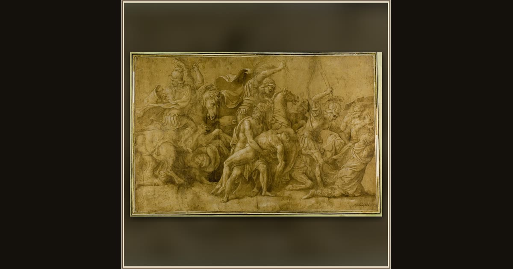

Menelaus Holding the Body of Patroclus
after Giulio Pippi, called Giulio Romano · n.d. · Art Institute of Chicago
Ajax tells Menelaus and Meriones to carry Patroclus from the fight (17.715–723). The drawing shows Menelaus lifting the fallen man. Explore its place in Homer's Iliad, Book XVII, line 722.